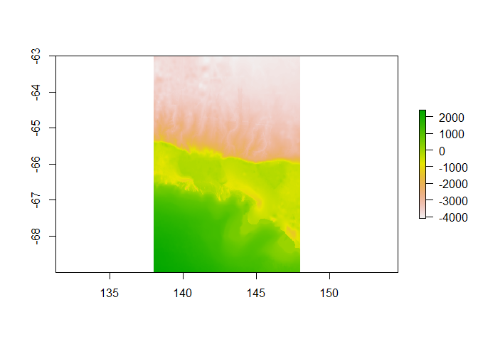

Blueant provides a set of data source configurations to use with the bowerbird package. These data sources are themed around Antarctic and Southern Ocean data, and include a range of oceanographic, meteorological, topographic, and other environmental data sets. Blueant will allow you to download data from these external data providers to your local file system, and to keep that data collection up to date.
Installing
install.packages("remotes")
remotes::install_github("AustralianAntarcticDivision/blueant", build_vignettes = TRUE)Usage overview
Configuration
Build up a configuration by first defining global options such as the destination on your local file system. Usually you would choose this destination data directory to be a persistent location, suitable for a data library. For demonstration purposes here we’ll just use a temporary directory:
library(blueant)
my_data_dir <- tempdir()
cf <- bb_config(local_file_root = my_data_dir)Add data sources from those provided by blueant. A summary of these sources is given at the end of this document. Here we’ll use the “George V bathymetry” data source as an example:
mysrc <- sources("George V bathymetry")
cf <- cf %>% bb_add(mysrc)This data source is fairly small (around 200MB, see mysrc$collection_size). Be sure to check the collection_size parameter of your chosen data source before running the synchronization. Some of these collections are quite large (see the summary table at the bottom of this document).
Synchronization
Once the configuration has been defined and the data source added to it, we can run the sync process. We set verbose = TRUE here so that we see additional progress output:
status <- bb_sync(cf, verbose = TRUE)
##
## Fri Jul 13 05:38:36 2018
## Synchronizing dataset: George V bathymetry
## Source URL https://data.aad.gov.au/eds/file/4494/
## --------------------------------------------------------------------------------------------
##
## this dataset path is: c:/tmp/data/data.aad.gov.au/eds/file/4494
## building file list ... done.
## downloading file: https://data.aad.gov.au/eds/file/4494/ ... done.
## decompressing: c:/tmp/data/data.aad.gov.au/eds/file/4494/download.zip ... extracting 4 files into c:/tmp/data/data.aad.gov.au/eds/file/4494 ... done.
##
## Fri Jul 13 05:40:14 2018 dataset synchronization complete: George V bathymetryCongratulations! You now have your own local copy of this data set. The files in this data set have been stored in a data-source-specific subdirectory of our local file root:
bb_data_source_dir(cf)
## [1] "c:/tmp/data/data.aad.gov.au/eds/file/4494"The contents of that directory:
list.files(bb_data_source_dir(cf), recursive = TRUE, full.names = TRUE)
## [1] "c:/tmp/data/data.aad.gov.au/eds/file/4494/download.zip"
## [2] "c:/tmp/data/data.aad.gov.au/eds/file/4494/gvdem1000m_v3.nc"
## [3] "c:/tmp/data/data.aad.gov.au/eds/file/4494/gvdem100m_v3.nc"
## [4] "c:/tmp/data/data.aad.gov.au/eds/file/4494/gvdem250m_v3.nc"
## [5] "c:/tmp/data/data.aad.gov.au/eds/file/4494/gvdem500m_v3.nc"The data sources provided by blueant can be read, manipulated, and plotted using a range of other R packages, including RAADTools and raster. In this case the data files are netcdf, which can be read by raster:
library(raster)
## Warning: package 'raster' was built under R version 3.4.2
## Warning: package 'sp' was built under R version 3.4.4
x <- raster(file.path(bb_data_source_dir(cf), "gvdem500m_v3.nc"))
plot(x)
Nuances
Choosing a data directory
It’s up to you where you want your data collection kept, and to provide that location to bowerbird. A common use case for bowerbird is maintaining a central data collection for multiple users, in which case that location is likely to be some sort of networked file share. However, if you are keeping a collection for your own use, you might like to look at https://github.com/r-lib/rappdirs to help find a suitable directory location.
Authentication
Some data providers require users to log in. These are indicated by the authentication_note column in the configuration table. For these sources, you will need to provide your user name and password, e.g.:
src <- sources(name="CMEMS global gridded SSH reprocessed (1993-ongoing)")
src$user <- "yourusername"
src$password <- "yourpassword"
cf <- bb_add(cf, src)
## or, using the pipe operator
mysrc <- bb_example_sources("CMEMS global gridded SSH reprocessed (1993-ongoing)") %>%
bb_modify_source(user = "yourusername", password = "yourpassword")
cf <- cf %>% bb_add(mysrc)Writing and modifying data sources
The bowerbird documentation is a good place to start to find out more about writing your own data sources or modifying existing ones.
Reducing download sizes
Sometimes you might only want part of a data collection. Perhaps you only want a few years from a long-term collection, or perhaps the data are provided in multiple formats and you only need one. If the data source uses the bb_handler_rget method, you can restrict what is downloaded by modifying the arguments passed through the data source’s method parameter, particularly the accept_follow, reject_follow, accept_download, and reject_download options.
For example, the CERSAT SSM/I sea ice concentration data are arranged in yearly directories, and so it is fairly easy to restrict ourselves to, say, only the 2017 data:
mysrc <- sources("CERSAT SSM/I sea ice concentration")
## first make sure that the data source doesn't already have an accept_follow parameter defined
"accept_follow" %in% names(mysrc$method[[1]])
## nope, so we can safely go ahead and impose our own
mysrc$method[[1]]$accept_follow <- "/2017"
cf <- cf %>% bb_add(mysrc)Alternatively, for data sources that are divided into subdirectories, one could replace the whole-data-source source_url with one or more that point to specific yearly (or other) subdirectories. For example, the default source_url for the CERSAT sea ice data above is ftp://ftp.ifremer.fr/ifremer/cersat/products/gridded/psi-concentration/data/antarctic/daily/netcdf/ (which has yearly subdirectories). So e.g. for 2016 and 2017 data we could do:
mysrc <- sources("CERSAT SSM/I sea ice concentration")
mysrc$source_url[[1]] <- c(
"ftp://ftp.ifremer.fr/ifremer/cersat/products/gridded/psi-concentration/data/antarctic/daily/netcdf/2016/",
"ftp://ftp.ifremer.fr/ifremer/cersat/products/gridded/psi-concentration/data/antarctic/daily/netcdf/2017/")
cf <- cf %>% bb_add(mysrc)Data source summary
These are the data source definitions that are provided as part of the blueant package.
Data group: Altimetry
CMEMS global gridded SSH near-real-time
For the Global Ocean - Multimission altimeter satellite gridded sea surface heights and derived variables computed with respect to a twenty-year mean. Previously distributed by Aviso+, no change in the scientific content. All the missions are homogenized with respect to a reference mission which is currently Jason-3. The acquisition of various altimeter data is a few days at most. VARIABLES
sea_surface_height_above_sea_level (SSH)
surface_geostrophic_eastward_sea_water_velocity_assuming_sea_level_for_geoid (UVG)
surface_geostrophic_northward_sea_water_velocity_assuming_sea_level_for_geoid (UVG)
sea_surface_height_above_geoid (SSH)
surface_geostrophic_eastward_sea_water_velocity (UVG)
surface_geostrophic_northward_sea_water_velocity (UVG)
Authentication note: Copernicus Marine login required, see http://marine.copernicus.eu/services-portfolio/register-now/
Approximate size: 3 GB
Documentation link: http://marine.copernicus.eu/services-portfolio/access-to-products/?option=com_csw&view=details&product_id=SEALEVEL_GLO_PHY_L4_NRT_OBSERVATIONS_008_046
CMEMS global gridded SSH reprocessed (1993-ongoing)
For the Global Ocean - Multimission altimeter satellite gridded sea surface heights and derived variables computed with respect to a twenty-year mean. Previously distributed by Aviso+, no change in the scientific content. All the missions are homogenized with respect to a reference mission which is currently OSTM/Jason-2. VARIABLES
sea_surface_height_above_sea_level (SSH)
surface_geostrophic_eastward_sea_water_velocity_assuming_sea_level_for_geoid (UVG)
surface_geostrophic_northward_sea_water_velocity_assuming_sea_level_for_geoid (UVG)
sea_surface_height_above_geoid (SSH)
surface_geostrophic_eastward_sea_water_velocity (UVG)
surface_geostrophic_northward_sea_water_velocity (UVG)
Authentication note: Copernicus Marine login required, see http://marine.copernicus.eu/services-portfolio/register-now/
Approximate size: 310 GB
Documentation link: http://marine.copernicus.eu/services-portfolio/access-to-products/?option=com_csw&view=details&product_id=SEALEVEL_GLO_PHY_L4_REP_OBSERVATIONS_008_047
CNES-CLS2013 Mean Dynamic Topography
CNES-CLS2013 Mean dynamic topography over the 1993-2012 period of the sea surface height above geoid. The MDT_CNES-CLS13 is an estimate of the ocean MDT for the 1993-2012 period. Since April 2014 (Duacs 2014, v15.0 version), the Ssalto/Duacs (M)SLA products are computed relative to 1993-2012 period that is consistent with this new MDT CNES-CLS13. Based on 2 years of GOCE data, 7 years of GRACE data, and 20 years of altimetry and in-situ data (hydrologic and drifters data).
Authentication note: AVISO login required, see https://www.aviso.altimetry.fr/en/data/data-access/endatadata-accessregistration-form.html
Approximate size: 0.1 GB
Documentation link: https://www.aviso.altimetry.fr/en/data/products/auxiliary-products/mdt.html
Data group: Meteorological
Antarctic Mesoscale Prediction System grib files
The Antarctic Mesoscale Prediction System - AMPS - is an experimental, real-time numerical weather prediction capability that provides support for the United States Antarctic Program, Antarctic science, and international Antarctic efforts.
Approximate size: not specified
Documentation link: http://www2.mmm.ucar.edu/rt/amps/
Data group: Ocean colour
Oceandata MODIS Aqua Level-3 binned daily RRS
Daily remote-sensing reflectance from MODIS Aqua. RRS is used to produce standard ocean colour products such as chlorophyll concentration
Approximate size: 800 GB
Documentation link: http://oceancolor.gsfc.nasa.gov/
Oceandata MODIS Aqua Level-3 mapped daily 4km chl-a
Daily remote-sensing chlorophyll-a from the MODIS Aqua satellite at 4km spatial resolution
Approximate size: 40 GB
Documentation link: http://oceancolor.gsfc.nasa.gov/
Oceandata MODIS Aqua Level-3 mapped monthly 9km chl-a
Monthly remote-sensing chlorophyll-a from the MODIS Aqua satellite at 9km spatial resolution
Approximate size: 8 GB
Documentation link: http://oceancolor.gsfc.nasa.gov/
Oceandata SeaWiFS Level-3 binned daily RRS
Daily remote-sensing reflectance from SeaWiFS. RRS is used to produce standard ocean colour products such as chlorophyll concentration
Approximate size: 130 GB
Documentation link: http://oceancolor.gsfc.nasa.gov/
Oceandata SeaWiFS Level-3 mapped monthly 9km chl-a
Monthly remote-sensing chlorophyll-a from the SeaWiFS satellite at 9km spatial resolution
Approximate size: 7.2 GB
Documentation link: http://oceancolor.gsfc.nasa.gov/
Oceandata VIIRS Level-3 binned daily RRS
Daily remote-sensing reflectance from VIIRS. RRS is used to produce standard ocean colour products such as chlorophyll concentration
Approximate size: 180 GB
Documentation link: http://oceancolor.gsfc.nasa.gov/
Oceandata VIIRS Level-3 mapped 32-day 9km chl-a
Rolling 32-day composite remote-sensing chlorophyll-a from the VIIRS satellite at 9km spatial resolution
Approximate size: 4 GB
Documentation link: http://oceancolor.gsfc.nasa.gov/
Oceandata VIIRS Level-3 mapped daily 4km chl-a
Daily remote-sensing chlorophyll-a from the VIIRS satellite at 4km spatial resolution
Approximate size: 1 GB
Documentation link: http://oceancolor.gsfc.nasa.gov/
Oceandata VIIRS Level-3 mapped monthly 9km chl-a
Monthly remote-sensing chlorophyll-a from the VIIRS satellite at 9km spatial resolution
Approximate size: 1 GB
Documentation link: http://oceancolor.gsfc.nasa.gov/
Oceandata VIIRS Level-3 mapped seasonal 9km chl-a
Seasonal remote-sensing chlorophyll-a from the VIIRS satellite at 9km spatial resolution
Approximate size: 0.5 GB
Documentation link: http://oceancolor.gsfc.nasa.gov/
Data group: Oceanographic
Argo ocean basin data (USGODAE)
Argo float data from the Global Data Access Centre in Monterey, USA (US Global Ocean Data Assimilation Experiment). These are multi-profile netcdf files divided by ocean basin.
Approximate size: not specified
Documentation link: http://www.argodatamgt.org/Documentation
CSIRO Atlas of Regional Seas 2009
CARS is a digital climatology, or atlas of seasonal ocean water properties.
Approximate size: 2.8 GB
Documentation link: http://www.marine.csiro.au/~dunn/cars2009/
World Ocean Atlas 2009
World Ocean Atlas 2009 (WOA09) is a set of objectively analyzed (1 degree grid) climatological fields of in situ temperature, salinity, dissolved oxygen, Apparent Oxygen Utilization (AOU), percent oxygen saturation, phosphate, silicate, and nitrate at standard depth levels for annual, seasonal, and monthly compositing periods for the World Ocean. It also includes associated statistical fields of observed oceanographic profile data interpolated to standard depth levels on both 1 degree and 5 degree grids
Approximate size: 6 GB
Documentation link: http://www.nodc.noaa.gov/OC5/WOA09/pr_woa09.html
World Ocean Atlas 2013 V2
World Ocean Atlas 2013 version 2 (WOA13 V2) is a set of objectively analyzed (1 degree grid) climatological fields of in situ temperature, salinity, dissolved oxygen, Apparent Oxygen Utilization (AOU), percent oxygen saturation, phosphate, silicate, and nitrate at standard depth levels for annual, seasonal, and monthly compositing periods for the World Ocean. It also includes associated statistical fields of observed oceanographic profile data interpolated to standard depth levels on 5 degree, 1 degree, and 0.25 degree grids
Approximate size: 57 GB
Documentation link: https://www.nodc.noaa.gov/OC5/woa13/
Data group: Reanalysis
NCEP-DOE Reanalysis 1 monthly averages
The NCEP/NCAR Reanalysis 1 project is using a state-of-the-art analysis/forecast system to perform data assimilation using past data from 1948 to the present. Monthly averages are calculated from the 6-hourly model output.
Approximate size: 2 GB
Documentation link: https://www.esrl.noaa.gov/psd/data/gridded/data.ncep.reanalysis.html
NCEP-DOE Reanalysis 2 monthly averages
NCEP-DOE Reanalysis 2 is an improved version of the NCEP Reanalysis I model that fixed errors and updated paramterizations of of physical processes. Monthly averages are calculated from the 6-hourly model output.
Approximate size: 2 GB
Documentation link: http://www.esrl.noaa.gov/psd/data/gridded/data.ncep.reanalysis2.html
Data group: Sea ice
Artist AMSR-E sea ice concentration
Passive microwave estimates of daily sea ice concentration at 6.25km spatial resolution, from 19-Jun-2002 to 2-Oct-2011.
Approximate size: 25 GB
Documentation link: https://icdc.cen.uni-hamburg.de/1/daten/cryosphere/seaiceconcentration-asi-amsre.html
Artist AMSR-E supporting files
Grids and other support files for Artist AMSR-E passive microwave sea ice data.
Approximate size: 0.01 GB
Documentation link: http://icdc.zmaw.de/1/daten/cryosphere/seaiceconcentration-asi-amsre.html
Artist AMSR2 near-real-time 3.125km sea ice concentration
Near-real-time passive microwave estimates of daily sea ice concentration at 3.125km spatial resolution in selected regions (from 24-July-2012 to present) and full Antarctic coverage (from 1-Jan-2016 to present).
Approximate size: 150 GB
Documentation link: https://seaice.uni-bremen.de/sea-ice-concentration/
Artist AMSR2 near-real-time sea ice concentration
Near-real-time passive microwave estimates of daily sea ice concentration at 6.25km spatial resolution, from 24-July-2012 to present.
Approximate size: 11 GB
Documentation link: https://seaice.uni-bremen.de/sea-ice-concentration/
Artist AMSR2 supporting files
Grids and landmasks for Artist AMSR2 passive microwave sea ice data.
Approximate size: 0.02 GB
Documentation link: https://seaice.uni-bremen.de/sea-ice-concentration/
CERSAT SSM/I sea ice concentration
Passive microwave sea ice concentration data at 12.5km resolution, 3-Dec-1991 to present
Approximate size: 2.5 GB
Documentation link: http://cersat.ifremer.fr/data/tools-and-services/quicklooks/sea-ice/ssm-i-sea-ice-concentration-maps
CERSAT SSM/I sea ice concentration supporting files
Grids for the CERSAT SSM/I sea ice concentration data.
Approximate size: 0.01 GB
Documentation link: http://cersat.ifremer.fr/data/tools-and-services/quicklooks/sea-ice/ssm-i-sea-ice-concentration-maps
MODIS Composite Based Maps of East Antarctic Fast Ice Coverage
Maps of East Antarctic landfast sea-ice extent, generated from approx. 250,000 1 km visible/thermal infrared cloud-free MODIS composite imagery (augmented with AMSR-E 6.25-km sea-ice concentration composite imagery when required). Coverage from 2000-03-01 to 2008-12-31
Approximate size: 0.4 GB
Documentation link: https://data.aad.gov.au/metadata/records/modis_20day_fast_ice
National Ice Center Antarctic daily sea ice charts
The USNIC Daily Ice Edge product depicts the daily sea ice pack in red (8-10/10ths or greater of sea ice), and the Marginal Ice Zone (MIZ) in yellow. The marginal ice zone is the transition between the open ocean (ice free) and pack ice. The MIZ is very dynamic and affects the air-ocean heat transport, as well as being a significant factor in navigational safety. The daily ice edge is analyzed by sea ice experts using multiple sources of near real time satellite data, derived satellite products, buoy data, weather, and analyst interpretation of current sea ice conditions. The product is a current depiction of the location of the ice edge vice a satellite derived ice edge product.
Approximate size: not specified
Documentation link: http://www.natice.noaa.gov/Main_Products.htm
Nimbus Ice Edge Points from Nimbus Visible Imagery
This data set (NmIcEdg2) estimates the location of the North and South Pole sea ice edges at various times during the mid to late 1960s, based on recovered Nimbus 1 (1964), Nimbus 2 (1966), and Nimbus 3 (1969) visible imagery.
Authentication note: Requires Earthdata login, see https://urs.earthdata.nasa.gov/. Note that you will also need to authorize the application ‘NSIDC_DATAPOOL_OPS’ (see ‘My Applications’ at https://urs.earthdata.nasa.gov/profile)
Approximate size: 0.1 GB
Documentation link: http://nsidc.org/data/nmicedg2/
NSIDC passive microwave supporting files
Grids and other support files for NSIDC passive microwave sea ice data.
Approximate size: 0.1 GB
Documentation link: http://nsidc.org/data/nsidc-0051.html
NSIDC SMMR-SSM/I Nasateam near-real-time sea ice concentration
Near-real-time passive microwave estimates of sea ice concentration at 25km, daily resolution. For older, quality-controlled data see the “NSIDC SMMR-SSM/I Nasateam sea ice concentration” source
Approximate size: 0.6 GB
Documentation link: http://nsidc.org/data/nsidc-0081.html
NSIDC SMMR-SSM/I Nasateam sea ice concentration
Passive microwave estimates of sea ice concentration at 25km spatial resolution. Daily and monthly resolution, available from 1-Oct-1978 to present. Data undergo a quality checking process and are updated annually. More recent data if required are available via the “NSIDC SMMR-SSM/I Nasateam near-real-time sea ice concentration” source.
Approximate size: 10 GB
Documentation link: http://nsidc.org/data/nsidc-0051.html
Data group: Sea surface temperature
GHRSST Level 4 MUR Global Foundation SST v4.1
A Group for High Resolution Sea Surface Temperature (GHRSST) Level 4 sea surface temperature analysis produced as a retrospective dataset (four day latency) at the JPL Physical Oceanography DAAC using wavelets as basis functions in an optimal interpolation approach on a global 0.011 degree grid. The version 4 Multiscale Ultrahigh Resolution (MUR) L4 analysis is based upon nighttime GHRSST L2P skin and subskin SST observations from several instruments including the NASA Advanced Microwave Scanning Radiometer-EOS (AMSRE), the Moderate Resolution Imaging Spectroradiometer (MODIS) on the NASA Aqua and Terra platforms, the US Navy microwave WindSat radiometer and in situ SST observations from the NOAA iQuam project. The ice concentration data are from the archives at the EUMETSAT Ocean and Sea Ice Satellite Application Facility (OSI SAF) High Latitude Processing Center and are also used for an improved SST parameterization for the high-latitudes. This data set is funded by the NASA MEaSUREs program (http://earthdata.nasa.gov/our-community/community-data-system-programs/measures-projects), and created by a team led by Dr. Toshio Chin from JPL.
Approximate size: 2000 GB
Documentation link: https://podaac.jpl.nasa.gov/Multi-scale_Ultra-high_Resolution_MUR-SST
NOAA Extended Reconstructed SST V3b
A global monthly SST analysis from 1854 to the present derived from ICOADS data with missing data filled in by statistical methods
Approximate size: 0.3 GB
Documentation link: http://www.esrl.noaa.gov/psd/data/gridded/data.noaa.ersst.html
NOAA Extended Reconstructed SST V5
A global monthly sea surface temperature dataset derived from the International Comprehensive Ocean-Atmosphere Dataset (ICOADS)
Approximate size: 0.3 GB
Documentation link: https://www.ncdc.noaa.gov/data-access/marineocean-data/extended-reconstructed-sea-surface-temperature-ersst-v5
NOAA OI 1/4 Degree Daily SST AVHRR
Sea surface temperature at 0.25 degree daily resolution, from 1-Sep-1981 to present
Approximate size: 140 GB
Documentation link: http://www.ngdc.noaa.gov/docucomp/page?xml=NOAA/NESDIS/NCDC/Geoportal/iso/xml/C00844.xml&view=getDataView&header=none
NOAA OI SST V2
Weekly and monthly mean and long-term monthly mean SST data, 1-degree resolution, 1981 to present. Ice concentration data are also included, which are the ice concentration values input to the SST analysis
Approximate size: 0.9 GB
Documentation link: http://www.esrl.noaa.gov/psd/data/gridded/data.noaa.oisst.v2.html
Oceandata MODIS Aqua Level-3 mapped monthly 9km SST
Monthly remote-sensing SST from the MODIS Aqua satellite at 9km spatial resolution
Approximate size: 7 GB
Documentation link: http://oceancolor.gsfc.nasa.gov/
Oceandata MODIS Terra Level-3 mapped monthly 9km SST
Monthly remote-sensing sea surface temperature from the MODIS Terra satellite at 9km spatial resolution
Approximate size: 7 GB
Documentation link: http://oceancolor.gsfc.nasa.gov/
Data group: Topography
Bedmap2
Bedmap2 is a suite of gridded products describing surface elevation, ice-thickness and the sea floor and subglacial bed elevation of the Antarctic south of 60S.
Approximate size: 3.3 GB
Documentation link: http://www.antarctica.ac.uk/bas_research/our_research/az/bedmap2/
Cryosat-2 digital elevation model
A New Digital Elevation Model of Antarctica derived from 6 years of continuous CryoSat-2 measurements
Approximate size: 0.2 GB
Documentation link: https://doi.org/10.5194/tc-2017-223
ETOPO1 bathymetry
ETOPO1 is a 1 arc-minute global relief model of Earth’s surface that integrates land topography and ocean bathymetry.
Approximate size: 1.3 GB
Documentation link: http://www.ngdc.noaa.gov/mgg/global/global.html
ETOPO2 bathymetry
2-Minute Gridded Global Relief Data (ETOPO2v2c)
Approximate size: 0.3 GB
Documentation link: http://www.ngdc.noaa.gov/mgg/global/etopo2.html
George V bathymetry
This dataset comprises Digital Elevation Models (DEMs) of varying resolutions for the George V and Terre Adelie continental margin, derived by incorporating all available singlebeam and multibeam point depth data.
Approximate size: 0.2 GB
Documentation link: https://data.aad.gov.au/metadata/records/GVdem_2008
Geoscience Australia multibeam bathymetric grids of the Macquarie Ridge
This is a compilation of all the processed multibeam bathymetry data that are publicly available in Geoscience Australia’s data holding for the Macquarie Ridge.
Approximate size: 0.4 GB
Documentation link: https://doi.org/10.4225/25/53D9B12E0F96E
GSHHG coastline data
A Global Self-consistent, Hierarchical, High-resolution Geography Database
Approximate size: 0.6 GB
Documentation link: http://www.soest.hawaii.edu/pwessel/gshhg
IBCSO bathymetry
The International Bathymetric Chart of the Southern Ocean (IBCSO) Version 1.0 is a new digital bathymetric model (DBM) portraying the seafloor of the circum-Antarctic waters south of 60S. IBCSO is a regional mapping project of the General Bathymetric Chart of the Oceans (GEBCO). The IBCSO Version 1.0 DBM has been compiled from all available bathymetric data collectively gathered by more than 30 institutions from 15 countries. These data include multibeam and single-beam echo soundings, digitized depths from nautical charts, regional bathymetric gridded compilations, and predicted bathymetry. Specific gridding techniques were applied to compile the DBM from the bathymetric data of different origin, spatial distribution, resolution, and quality. The IBCSO Version 1.0 DBM has a resolution of 500 x 500 m, based on a polar stereographic projection, and is publicly available together with a digital chart for printing from the project website (www.ibcso.org) and at http://dx.doi.org/10.1594/PANGAEA.805736.
Approximate size: 4.3 GB
Documentation link: http://www.ibcso.org/
IBCSO chart for printing
The IBCSO Poster, 2013, is a polar stereographic view of the Southern Ocean displaying bathymetric contours south of 60S at a scale of 1:7,000,000. The poster size is 39.25 x 47.125 inches.
Approximate size: 0.2 GB
Documentation link: http://www.ibcso.org/
Kerguelen Plateau bathymetric grid 2010
This data replaces the digital elevation model (DEM) for the Kerguelen Plateau region produced in 2005 (Sexton 2005). The revised grid has been gridded at a grid pixel resolution of 0.001-arc degree (about 100 m). The new grid utilised the latest data sourced from ship-based multibeam and singlebeam echosounder surveys, and satellite remotely-sensed data. Report Reference: Beaman, R.J. and O’Brien, P.E., 2011. Kerguelen Plateau bathymetric grid, November 2010. Geoscience Australia, Record, 2011/22, 18 pages.
Approximate size: 0.7 GB
Documentation link: http://www.ga.gov.au/metadata-gateway/metadata/record/gcat_71552
Natural Earth 10m physical vector data
Natural Earth is a public domain map dataset available at 1:10m, 1:50m, and 1:110 million scales.
Approximate size: 0.2 GB
Documentation link: http://www.naturalearthdata.com/downloads/10m-physical-vectors/
New Zealand Regional Bathymetry 2016
The NZ 250m gridded bathymetric data set and imagery, Mitchell et al. 2012, released 2016.
Approximate size: 1.3 GB
Documentation link: https://www.niwa.co.nz/our-science/oceans/bathymetry/further-information
Radarsat Antarctic digital elevation model V2
The high-resolution Radarsat Antarctic Mapping Project (RAMP) digital elevation model (DEM) combines topographic data from a variety of sources to provide consistent coverage of all of Antarctica. Version 2 improves upon the original version by incorporating new topographic data, error corrections, extended coverage, and other modifications.
Approximate size: 5.3 GB
Documentation link: http://nsidc.org/data/nsidc-0082
RTOPO-1 Antarctic ice shelf topography
Sub-ice shelf circulation and freezing/melting rates in ocean general circulation models depend critically on an accurate and consistent representation of cavity geometry. The goal of this work is to compile independent regional fields into a global data set. We use the S-2004 global 1-minute bathymetry as the backbone and add an improved version of the BEDMAP topography for an area that roughly coincides with the Antarctic continental shelf. Locations of the merging line have been carefully adjusted in order to get the best out of each data set. High-resolution gridded data for upper and lower ice surface topography and cavity geometry of the Amery, Fimbul, Filchner-Ronne, Larsen C and George VI Ice Shelves, and for Pine Island Glacier have been carefully merged into the ambient ice and ocean topographies. Multibeam survey data for bathymetry in the former Larsen B cavity and the southeastern Bellingshausen Sea have been obtained from the data centers of Alfred Wegener Institute (AWI), British Antarctic Survey (BAS) and Lamont-Doherty Earth Observatory (LDEO), gridded, and again carefully merged into the existing bathymetry map.
Approximate size: 4.1 GB
Documentation link: http://epic.awi.de/30738/
Shuttle Radar Topography Mission elevation data SRTMGL1 V3
Global 1-arc-second topographic data generated from NASA’s Shuttle Radar Topography Mission. Version 3.0 (aka SRTM Plus or Void Filled) removes all of the void areas by incorporating data from other sources such as the ASTER GDEM.
Authentication note: Requires Earthdata login, see https://urs.earthdata.nasa.gov/
Approximate size: 620 GB
Documentation link: https://lpdaac.usgs.gov/dataset_discovery/measures/measures_products_table/srtmgl1_v003
Smith and Sandwell bathymetry
Global seafloor topography from satellite altimetry and ship depth soundings
Approximate size: 1.4 GB
Documentation link: http://topex.ucsd.edu/WWW_html/mar_topo.html